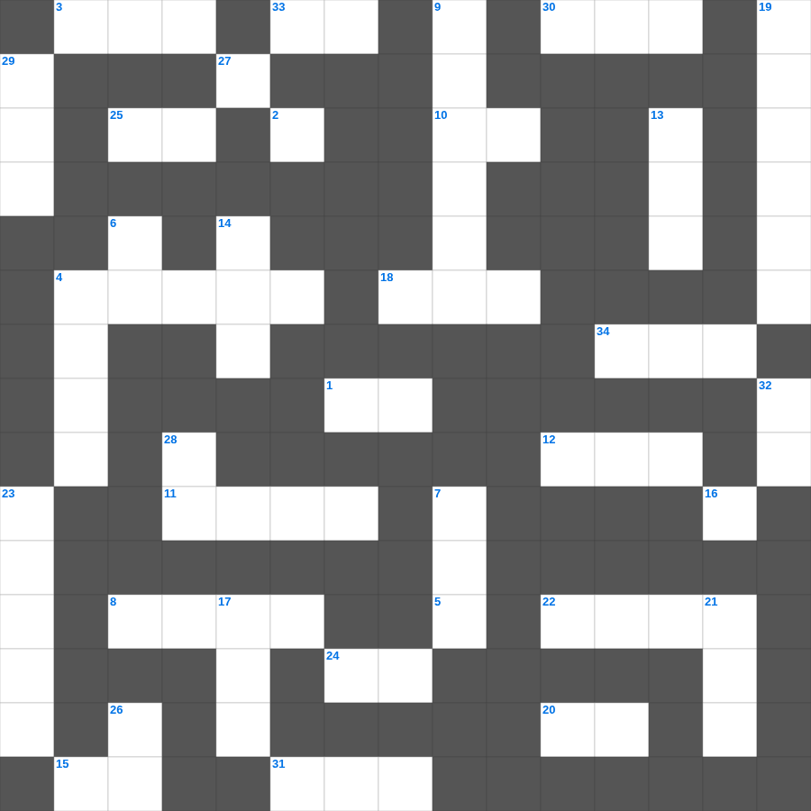

고린도전서: 사랑장
📌 서비스 정의
십자가로세로는 교회 주보와 주일학교에서 사용할 수 있는 성경 기반 가로세로 퍼즐 서비스입니다. 성경 인물, 사건, 핵심 구절을 바탕으로 제작되었습니다. 온라인 풀이 및 인쇄 기능을 제공합니다.
고린도전서를 주제로 한 고린도전서 성경퀴즈입니다. 35개의 단어를 맞춰보세요! 가로세로 낱말 퍼즐 형식으로 고린도전서의 핵심 내용을 재미있게 복습할 수 있습니다.

📝 가로 힌트
1. 좋은 땅에 떨어진 씨앗은 몇 배의 결실?
3. 부지중에 지은 죄를 속하기 위한 제사
4. 강도를 만난 자의 진정한 이웃
5. 잃어버린 한 마리 이것을 찾는 목자
8. 다윗 왕조의 수도, 평화의 도시
10. 다윗이 피신했던 블레셋 도시
11. 빌립이 전도한 제자
12. 어린아이가 가져온 보리떡의 개수
15. 실로암 못에서 눈을 씻고 보게 된 사람
18. 구름 기둥과 이것 기둥
20. 정해진 성경 본문을 읽는 것
22. 느헤미야의 성벽 재건 기간
24. 예수님이 태어나 뉘이셨던 곳
25. 성막 내부를 덮는 휘장의 색깔(청색, 자색, 이것)
27. 야곱이 베개로 삼았던 것
30. 모세의 누나
31. 성소의 떡상 위에 놓인 12개의 떡
33. 예수님이 예루살렘 입성 때 타신 것
34. 예수님이 제자들의 발을 씻기신 일
📝 세로 힌트
2. 오직 정의를 이것 같이 흐르게 할지어다
4. 우리의 신앙 고백이 담긴 기도문
6. 이스라엘아 들으라 (신명기 6:4)
7. 보라 세상 죄를 지고 가는 하나님의 이것
9. 여호사밧 왕 때 찬양대가 앞장서자 적들이 무너진 곳
13. 야곱이 축복을 받기 위해 팔에 붙인 것
14. 솔로몬 성전의 두 기둥 이름 중 다른 하나
16. 낮을 주관하게 하신 큰 광명체
17. 아론의 지팡이에서 핀 꽃
19. 할례를 조건으로 세겜 사람들을 죽인 사건
21. 용서할 때 일흔 번씩 몇 번까지?
23. 열 가지 재앙 중 마지막 재앙
26. 땅 끝까지 이르러 내 이것이 되리라
28. 광야에서 하늘에서 내려온 양식
29. 하나님이 약속하신 젖과 꿀이 흐르는 땅
32. 다윗이 왕이 되기 전의 직업
🧑🏫 교회 교육 자료 활용
이 퍼즐은 주일학교 교재 추천 자료로 활용할 수 있고, 주일학교 주보에 넣기 좋은 분량으로 구성되어 있습니다. 수업용 주일학교 교안에 활동지로 붙이거나, 예배 후 복습용 주일학교 공과교재로 바로 사용할 수 있습니다.
🏷️ 키워드
고린도전서 성경퀴즈, 고린도전서, 십자가로세로, 성경퀴즈, 말씀퀴즈, 가로세로퍼즐, 주일학교 교재 추천, 주일학교 주보, 주일학교 교안, 주일학교 공과교재